Lesson 8: Geographically Weighted Predictive Modelling
Content
What is Predictive Modelling?
What is Geospatial Predictive Modelling
Introducing Recursive Partitioning
Advanced Recursive Partitioning: Random Forest
Introducing Geographically Weighted Random Forest
What is Predictive Modelling?
Predictive modelling uses statistical learning or machine learning techniques to predict outcomes.
- By and large, the event one wants to predict is in the future. However, a set of known outcome and predictors (also known as variables) will be used to calibrate the predictive models.
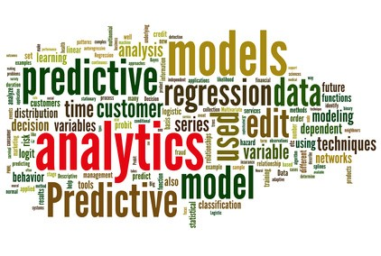
What is Geospatial Predictive Modelling
- Geospatial predictive modelling is conceptually rooted in the principle that the occurrences of events being modeled are limited in distribution.
- When geographically referenced data are used, occurrences of events are neither uniform nor random in distribution over space. There are geospatial factors (infrastructure, sociocultural, topographic, etc.) that constrain and influence where the locations of events occur.
- Geospatial predictive modeling attempts to describe those constraints and influences by spatially correlating occurrences of historical geospatial locations with environmental factors that represent those constraints and influences.
Differences between Explanatory Modelling and Predictive Analytics
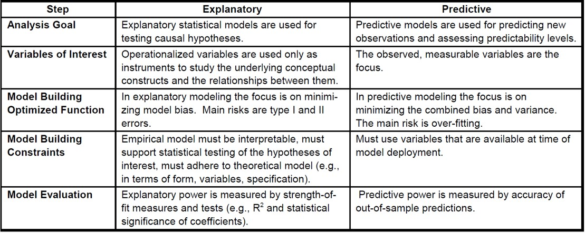
Predictive Modelling Process
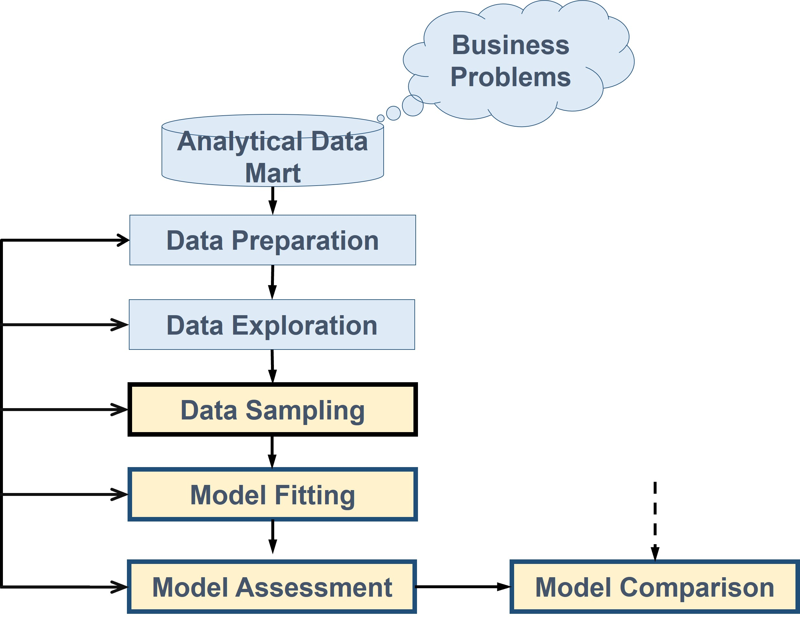
Data Sampling in Predictive Analytics
- Training dataset: This is used to build up our prediction algorithm. Our algorithm tries to tune itself to the quirks of the training data sets. In this phase we usually create multiple algorithms in order to compare their performances during the Cross-Validation Phase.
- Validation dataset: This data set is used to give an estimate of model skill while tuning model’s hyperparameters. It aims to avoiding over-fitting the predictive model.
- Test dataset: The is also held back from the training of the model, but is instead used to give an unbiased estimate of the skill of the final tuned model when comparing or selecting between final models.
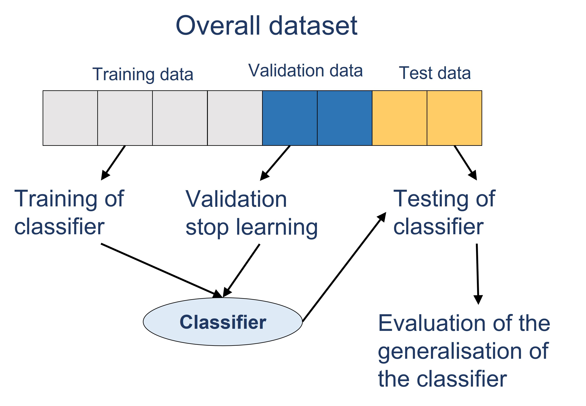
Comparing Predictive Performance
- The need for model comparison arises from the wide choice of classifiers and predictive methods.
- Not only do we have several different methods, but even within a single method there are usually many options that can lead to completely different results.
- In practice, modelers often use several tools, sometimes both graphical and numerical, to choose a best model.
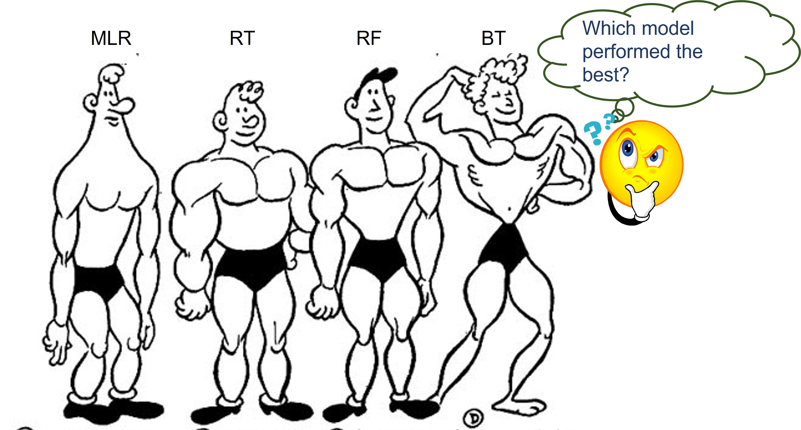
- Mean Squared Error (MSE) (also known as Average Squared Error (ASE))
- Akaike information criterion (AIC)
- Bayesian Information Criterion (BIC)
Introducing recursive partitioning
- A predictive methodology involving a dependent variable y and one and more predictors.
- The dependent variable can be either a continuous or categorical scales.
- Rules partition data into mutually exclusive groups.
- No need to worry about transformations such as logs.
- No prior distribution requirement.
Recursive Partitioning as a Machine Learning engine
- As a machine learning technique, recursive partitioning algorithms operate by building a model based on the training dataset and using that to make predictions or decisions, rather than following only explicitly programmed instructions.
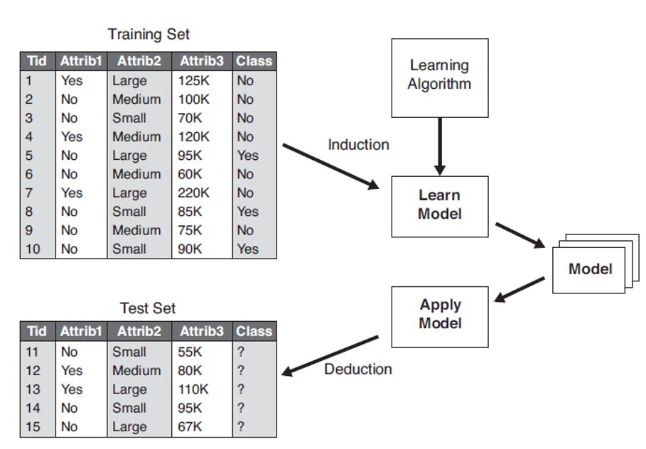
Properties of Recursive Partitioning
- If the response is categorical, then it is fitting the probabilities estimated for the response levels, minimizing the residual log-likelihood chi-square [2*entropy].
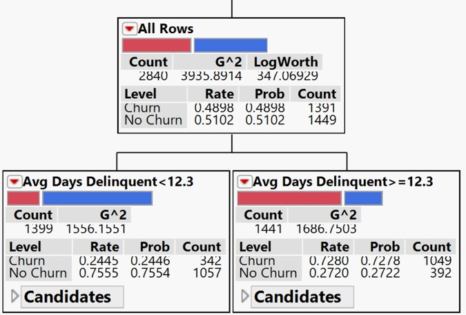
If the response is continuous, then the platform fits means, minimizing the sum of squared errors. The earlier is popularly known as Classification Trees and the later is known as Regression Trees.
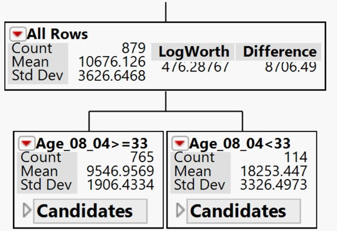
Properties of Recursive Partitioning
Working with continuous predictor(s)
- If a predictor is continuous, then the partition is done according to a splitting “cut” value for X. For example, Average Days Delinquent < 12.3 or >=12.3 as shown in the figure.
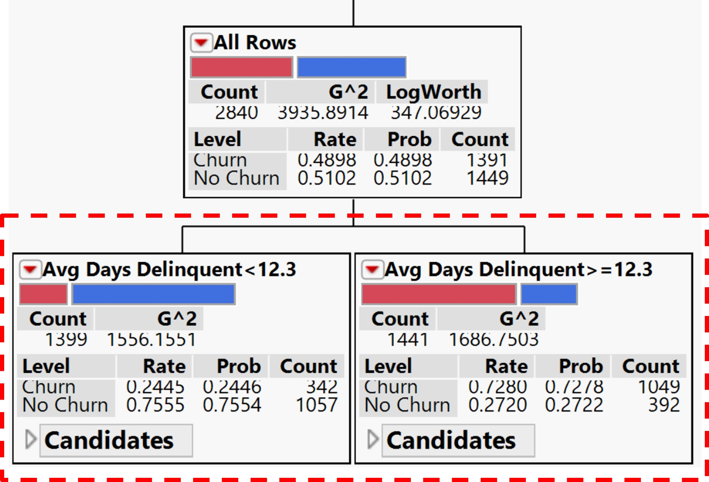
Working with categorical predictor(s)
- If the predictor is categorical, then it divides the X categories into two groups of levels and considers all possible groupings into two levels.
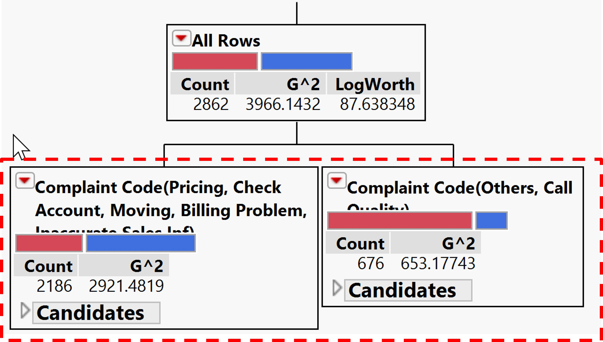
Components of Classification and Regression Tree (CART)
A CART is read from the top down starting at the root node.
- Each internal node represents a split based on the values of one of the inputs. The inputs can appear in any number of splits throughout the tree. Cases move down the branch that contains its input value.
- The terminal nodes of the tree are called leaves. The leaves represent the predicted target. All cases reaching a particular leaf are given the same predicted value.
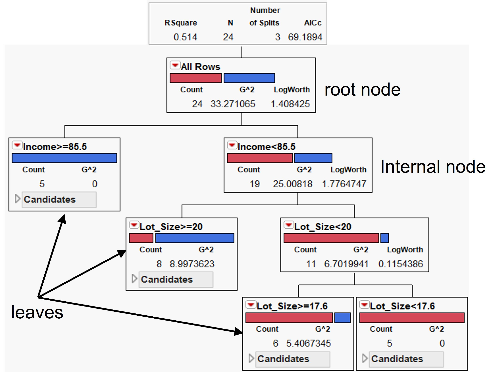
Some useful features and advantages of Recursive Partitioning
- Recursive partitioning is nonparametric and therefore does not rely on data belonging to a particular type of distribution.
- Recursive partitioning is not significantly impacted by outliers in the input variables.
- You can relax stopping rules to “overgrow” decision trees and then prune back the tree to the optimal size. This approach minimizes the probability that important structure in the data set will be overlooked by stopping too soon.
- Recursive partitioning incorporates both testing with a test data set and cross-validation to assess the goodness of fit more accurately.
- Recursive partitioning can use the same variables more than once in different parts of the tree. This capability can uncover complex interdependencies between sets of variables.
- Recursive partitioning can be used in conjunction with other prediction methods to select the input set of variables.
Advanced Recursive Partitioning: Random Forest
Random forest, like its name implies, consists of a large number of individual decision trees that operate as an ensemble.
- Each individual tree in the random forest spits out a class prediction and the class with the most votes becomes our model’s prediction as shown the figure.
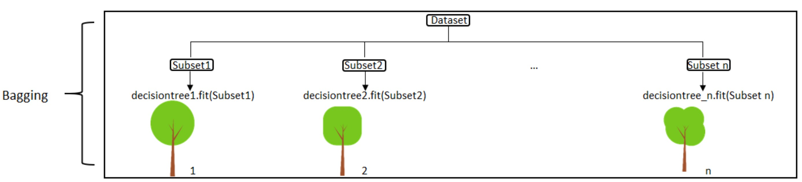
Introducing Geographically Weighted Random Forest (gwRF)
- Geographically Weighted Random Forest (GRF) is a spatial analysis method using a local version of the famous Machine Learning algorithm.
- This technique adopts the idea of the Geographically Weighted Regression.
- The main difference between a tradition (linear) GWR and GRF is that we can model non-stationarity coupled with a flexible non-linear model which is very hard to overfit due to its bootstrapping nature, thus relaxing the assumptions of traditional Gaussian statistics.